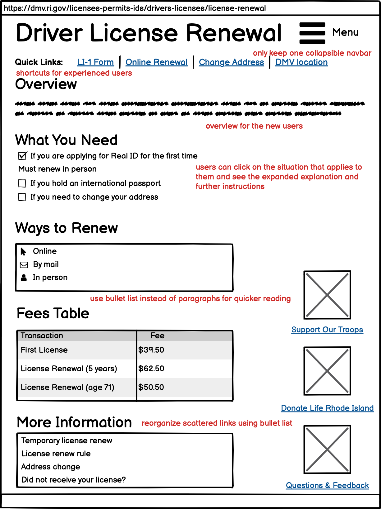
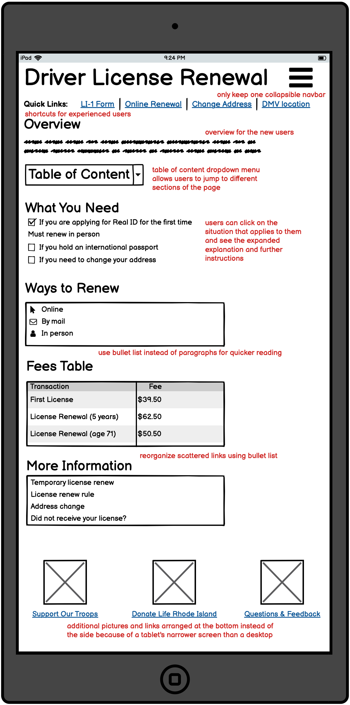
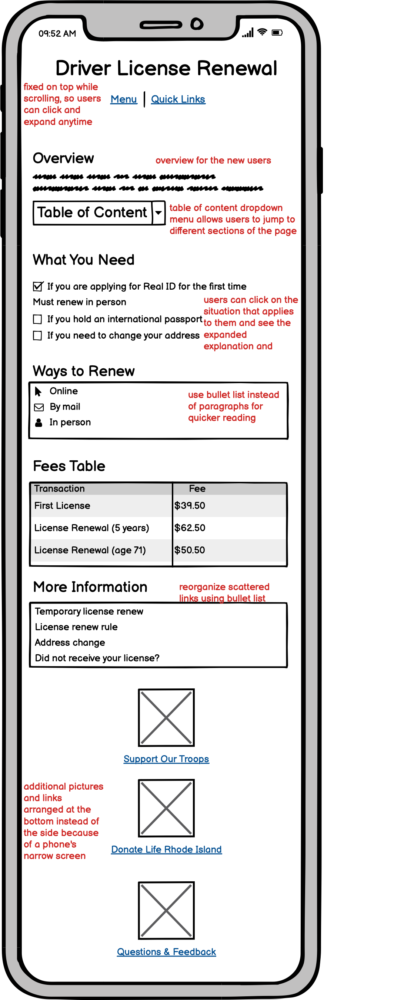

Part 2: Visual Redesign
Low-fidelity Wireframing
All annotations are written in red. 

Visual Design Guide

High-fidelity Wireframing
All annotations are written in yellow sticky notes.


I redesigned Rhode Island’s DMV’s driver’s license renewal website. Last year, I actually went through the renewal process, looked up the website, and still followed the wrong instructions. The website is arranged as blocks of text with various links buried in the middle, which doesn’t convey much hierarchy of information, and makes it easy for people to ignore important details. I believe that if I had seen a better-designed website last time, I would have had a much easier time renewing my license.
The website probably expects users to read every paragraph carefully from top to bottom before taking any actions, and expects users to piece all the related information together themselves to know what the correct next step is.
On the desktop version, the left pane contains a navigation bar for all web pages on the DMV website. While these are useful links and users might want to check them out, these links aren’t really relevant for users who are specifically looking for license renewal information. The left pane is also redundant since there’s already a menu dropdown button on the top right that provides almost the same navigation bar.
To renew a license, the general process involves figuring out what materials to prepare, and where to send over the materials and pay the fee. The user also needs to check whether they fall into any special categories, such as whether they are applying for a Real ID, whether they hold an international passport, or whether they need to change their address before renewing. The website should have different sections, instead of presenting everything in one big paragraph.
No consistent format for important information
Currently there are bolded texts of varying sizes at the top, at the bottom, and in the middle of the web page. It’s hard for users to remember that there is bolded text at the top by the time they finish reading everything and reach the bottom.
Note that the website uses beige color to indicate clickable buttons and links. Most are not working, except for the accordion style menu under What You Need to Know and Ways to Renew.